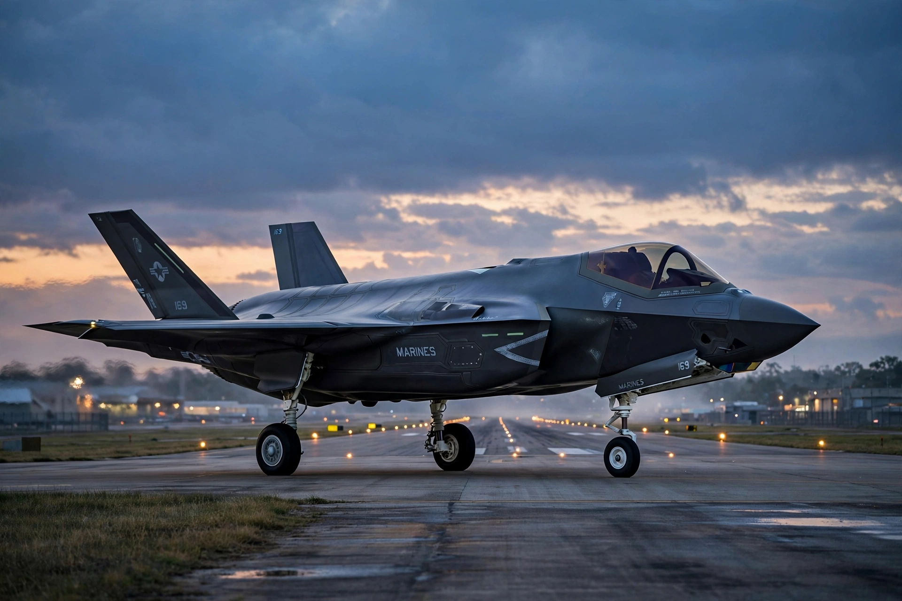

| Lockheed Martin Corporation | |
|---|---|
| Type | Public (NYSE: LMT) |
| Industry | Aerospace, defence, arms, security |
| Founded | March 15, 1995 (merger of Lockheed Corporation and Martin Marietta) |
| Headquarters | Bethesda, Maryland, United States |
| Revenue | ~US$67–71 billion (recent years) |
| Employees | ~114,000–116,000 |
| Divisions | Aeronautics; Missiles and Fire Control; Rotary and Mission Systems; Space |

Lockheed Martin Corporation is an American aerospace, arms, defence, information security and technology corporation with worldwide interests. It was formed by the merger of Lockheed Corporation with Martin Marietta in March 1995. It is headquartered in North Bethesda, Maryland, in the Washington, D.C. area. Lockheed Martin employs approximately 115,000 people worldwide and is the world's largest defence contractor by revenue; the great majority of its income comes from military sales, principally to the United States government.
The company's flagship programme is the F-35 Lightning II stealth multirole fighter, the largest and most expensive military programme in history. Other major products include the F-22 Raptor, the C-130 Hercules family (including the C-130J Super Hercules), the THAAD and Aegis missile-defence systems, the Trident II submarine-launched ballistic missile, the Orion crew spacecraft for NASA, and GPS III satellites. Its famous Skunk Works advanced development division in California created the U-2 and SR-71 spy planes.
The Lockheed side of the company traces to the Loughead Aircraft Manufacturing Company founded in 1912 by Allan and Malcolm Loughead; Martin Marietta descended from the Glenn L. Martin Company (1912) and the Martin Marietta materials conglomerate formed in 1961. The 1995 "merger of equals" was part of the post–Cold War consolidation of the US defence industry. In 2015 the company acquired Sikorsky Aircraft, maker of the Black Hawk helicopter, from United Technologies.